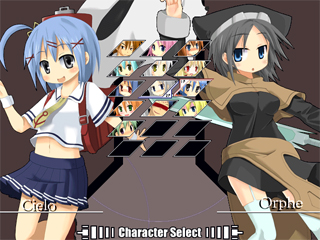
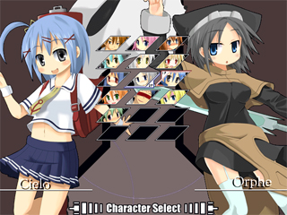

| ・VS Player ＆ Training |
 VS Playerモードは、人間同士で対戦するモードです。 友人と集まって対戦等にご利用ください。 お互いがキャラクターを選択すると、ステージセレクト画面に移行します。 左右キーでステージを選んで、 この時、決定の前に |
| ・VS Player ＆ Training |
|  VS Playerモードは、人間同士で対戦するモードです。 友人と集まって対戦等にご利用ください。 お互いがキャラクターを選択すると、ステージセレクト画面に移行します。 左右キーでステージを選んで、 この時、決定の前に |